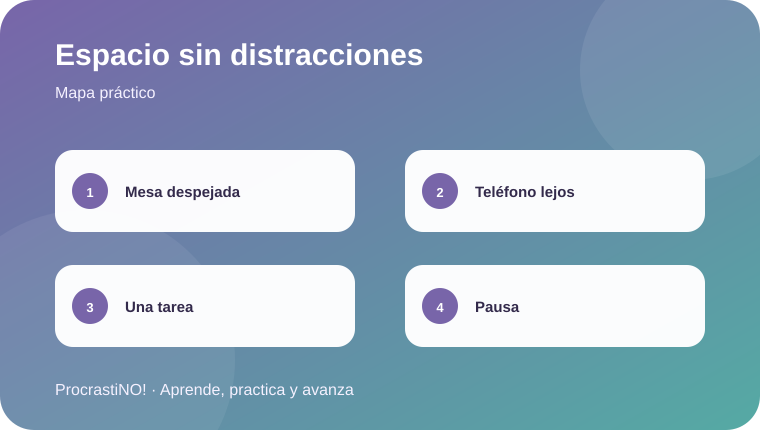

Módulo 3 · 3
Espacio de estudio sin distracciones
Prepara una zona de tarea con solo lo necesario y reduce las interrupciones del entorno.


Diseña una zona de enfoque
Antes de comenzar, deja visible solo lo que necesitas para la tarea. Coloca el teléfono fuera del alcance inmediato y desactiva notificaciones que no sean necesarias para estudiar.
📚 Tarea
🧰 Herramientas
☕ Pausa
Idea clave:
Checklist rápido: escritorio despejado, agua cerca, teléfono fuera de alcance y una tarea claramente definida.
Checklist completado:
0
/ 4
Referencias
- Occupational Safety and Health Administration. (n.d.). Computer workstations. https://www.osha.gov/etools/computer-workstations/